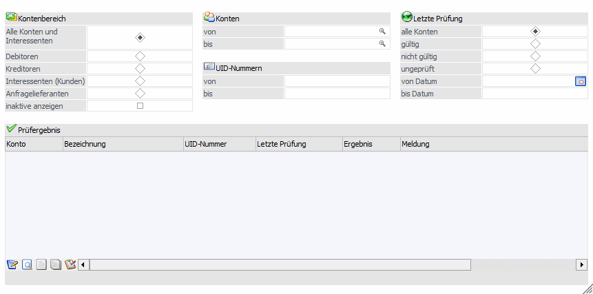
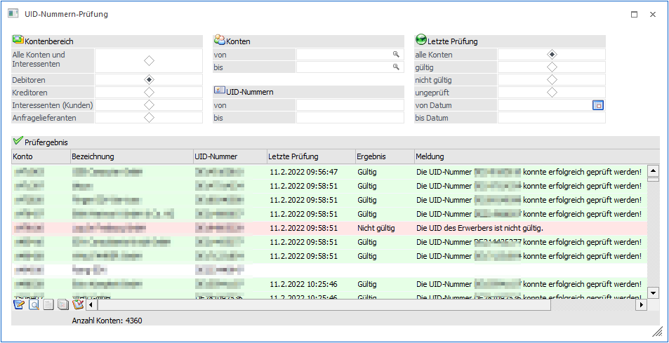
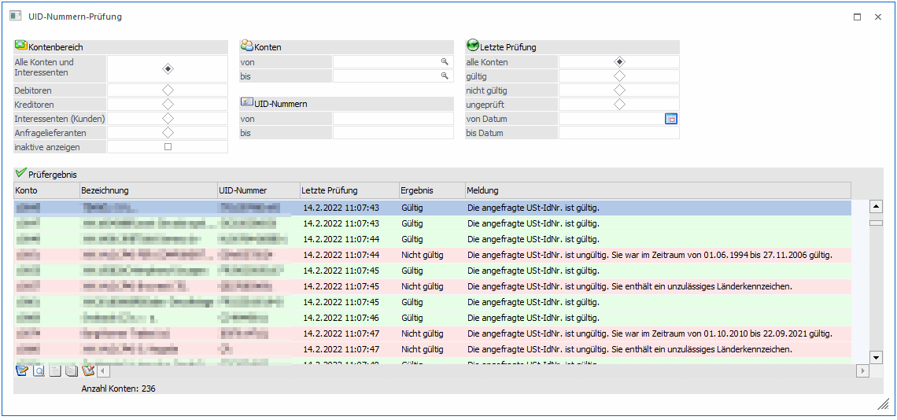
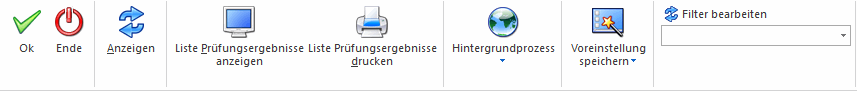
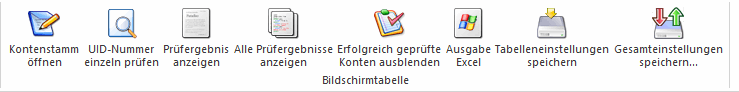

Über den Menüpunkt
1 Stammdaten
1 Konten
1 UID-Prüfung
kann eine UID-Massenprüfung für Mandanten mit dem Länderkennzeichen A oder D durchgeführt werden. Dabei wird ausschließlich die Prüfung der Stufe 2 durchgeführt.

Prüfroutine Österreich:
Für die Prüfroutine in Österreich können mit einem Aufruf des FONWebService.exe mehrere UIDs geprüft werden. Die Kommunikation der WinLine erfolgt mit diesem EXE nun mittels Dateien im Programmverzeichnis. Für die Prüfung wird eine Datei geschrieben, die entweder eine UID oder auch mehrere UIDs enthält, im EXE werden mit einem einzigen Login beim WebService alle diese UIDs geprüft und das Ergebnis wiederum in einer Datei an die WinLine zurückgeliefert. Beide Dateien werden nach Auswertung der Ergebnisse wieder gelöscht.
Vor Durchführung der Prüfung wird wie bisher geprüft, ob im Mandantenstamm die Zugangsdaten für das WebService eingetragen sind und ob der Benutzer die Berechtigung hat, die Prüfung durchzuführen.
Bisher wurden nur erfolgreiche Prüfungen protokolliert, jetzt wird jede Prüfung (die nicht wegen eines allgemeinen Fehlers abgebrochen wurde) in das Protokoll geschrieben und verändert damit den aktuellen Prüfstatus des Kontos bzw. der UID.
Die möglichen Prüfungsergebnisse sind "gültig", "nicht gültig" und "ungeprüft".
Prüfroutine Deutschland
Für die Prüfung in Deutschland wird dieselbe Web-Abfrage des Bundeszentralamts für Steuern (BZSt) - Bestätigung von ausländischen Umsatzsteuer-Identifikationsnummern über die XML-RPC-Schnittstelle - verwendet wie bisher.
Bei der Prüfung wurde bisher nur das Ergebnis der Web-Abfrage in einer Meldung dar- und zum Druck zur Verfügung gestellt. Jetzt werden auch hier die Ergebnisse im UID-Protokoll protokolliert und ausgewertet.
Hinweis:
In Mandanten mit Länderkennzeichen D werden nur ausländische UID-Nummern geprüft.
Ø Kontenbereich
Auswahl des Kontenbereichs für die UID-Prüfung
ü Alle Konten und Interessenten
ü Debitoren
ü Kreditoren
ü Interessenten (Kunden)
ü Anfragelieferanten
Ø Inaktive anzeigen
Durch Aktivierung dieser Option werden auch inaktive Konten bzw. Interessenten in der Tabelle angezeigt.
Ø Konten von / bis
Hier kann eine Einschränkung der Konten vorgenommen werden, die für die UID-Prüfung herangezogen werden sollen.
Ø UID-Nummern von / bis
Hier kann eine Einschränkung der UID-Nummern vorgenommen werden, die für die UID-Prüfung herangezogen werden sollen.
Ø Letzte Prüfung
Die UID-Prüfung kann auf das Ergebnis der letzten Prüfung eingeschränkt werden. Zur Auswahl stehen:
ü alle Konten
ü gültig
ü nicht gültig
ü ungeprüft
Ø Datum von / bis
Einschränkung auf das Datum der letzten Prüfung. Diese Eingabefelder stehen für "ungeprüft" nicht zur Verfügung und sind dann nicht aktiv.
Ø Prüfergebnis
Mit dem Anzeigen-Button werden die der Selektion entsprechenden Konten in die Tabelle gefüllt, wobei nur Konten berücksichtigt werden, die eine UID-Nummer eingetragen haben, d.h. sowohl Hauptkonten (mit UID im FIBU-Register) und FIBU-Subkonten (mit eigener UID im Adress-Registern), als auch Interessenten (mit UID im FAKT-Register) werden berücksichtigt. Für Mandanten mit Länderkennzeichen D werden Konten mit einer DE-UID nicht berücksichtigt, da diese nicht geprüft werden können.
In der Tabelle werden folgende Werte angezeigt:
ü Konto
ü Bezeichnung
ü UID-Nummer
ü Datum und Uhrzeit der letzten Prüfung
ü Ergebnis der letzten Prüfung (gültig, nicht gültig, ungeprüft)
ü Meldung der letzten Prüfung
Im Fußteil der Tabelle wird die Anzahl der in der Tabelle enthaltenen Konten angezeigt.
Prüfungsergebnis in einem Mandanten mit Länderkennzeichen A

Prüfungsergebnis in einem Mandanten mit Länderkennzeichen D

Buttons

Ø OK
Durch Drücken des OK-Buttons oder der F5-Taste wird die UID-Prüfung durchgeführt.
Vorab wird der Mandantenstamm eingelesen und geprüft, ob dort die eigene UID eingetragen ist, andernfalls wird mit einer Fehlermeldung abgebrochen.
Prüfung Österreich:
Alle Konten werden gemeinsam an die Prüfroutine übergeben und dort geprüft, erst nach Abschluss der Prüfung werden die Ergebnisse ausgewertet und dargestellt. Ein Abbruch ist hier nicht möglich.
Prüfung Deutschland:
Die Tabelle wird Zeile für Zeile abgearbeitet, die UIDs einzeln geprüft und das Ergebnis jeweils sofort dargestellt und die Zeile entsprechend eingefärbt. Es steht auch ein Abbruch-Button zur Verfügung.
Ø Ende
Durch Drücken des Ende-Buttons (der ESC-Taste) wird das Fenster geschlossen.
Ø Anzeigen
Mit dem Anzeigen-Button werden die der Selektion entsprechenden Konten in die Tabelle gefüllt, wobei nur Konten berücksichtigt werden, die eine UID-Nummer eingetragen haben, d.h. sowohl Hauptkonten (mit UID im FIBU-Register) und FIBU-Subkonten (mit eigener UID im Adress-Registern), als auch Interessenten (mit UID im FAKT-Register) werden berücksichtigt. Für Mandanten mit Länderkennzeichen D werden Konten mit einer DE-UID nicht berücksichtigt, da diese nicht geprüft werden können.
Ø Liste Prüfungsergebnisse anzeigen
Die Prüfungsergebnisse werden über diesen Button auf den Bildschirm ausgeben. Wenn die Tabelle leer ist, ist dieser Button inaktiv.
Ø Liste Prüfungsergebnisse drucken
Die Prüfungsergebnisse werden über diesen Button auf den Drucker ausgeben. Wenn die Tabelle leer ist, ist dieser Button inaktiv.
Ø Voreinstellung speichern
Durch Anwahl dieses Buttons erfolgt eine benutzerspezifische Speicherung aller im Fenster getätigten Einstellungen. Diese sogenannten "Voreinstellungen" können jederzeit wieder abgerufen werden und ermöglichen dadurch ein schnelleres und zielorientierteres Arbeiten (nähere Informationen entnehmen Sie bitte dem Kapitel "Die Voreinstellungen").
Ø Filter bearbeiten
Durch Anwahl des Filter-Buttons kann eine detailliertere Einschränkung der Konten vorgenommen werden, für die eine UID-Prüfung durchgeführt werden soll.
Tabellenbuttons

Ø Kontenstamm öffnen
Über diesen Button wird das ausgewählte Konto im Kontenstamm geladen.
Ø UID-Nummer einzeln prüfen
Hier werden dieselben Prüfungen wie beim OK-Button für das einzelne, aktuell in der Tabelle selektierte Konto durchgeführt, allerdings werden hier vor der Prüfung die (ggf. in der Zwischenzeit im Kontenstamm geänderten) Werte aus dem Konto nochmals neu eingelesen. Auch hier wird vorab die UID aus dem Mandantenstamm geprüft, nach Abschluss der Prüfung des einzelnen Kontos wird sowohl im Erfolgs-, als auch im Fehlerfall eine Meldung ausgegeben.
Ø Prüfergebnis anzeigen
Das aktuelle Prüfergebnis für das ausgewählte Konto wird am Bildschirm angezeigt.
Ø Alle Prüfergebnisse anzeigen
Eine Liste aller Prüfergebnisse für das ausgewählte Konto wird am Bildschirm angezeigt. Hier werden alle Prüfungen für die Kontonummer berücksichtigt, auch wenn zum Zeitpunkt der Prüfung eine andere UID eingetragen war.
Ø Erfolgreich geprüfte Konten ausblenden
Alle erfolgreich geprüften Zeilen werden aus der Tabelle entfernt, die Anzahl der Konten im Fußteil der Tabelle wird aktualisiert.
Ø Ausgabe Excel
Der Inhalt der Tabelle kann in eine Excel-Tabelle ausgegeben werden.
Ø Tabelleneinstellungen speichern
Die Spalten einer Tabelle können grundsätzlich an beliebige Positionen verschoben, bzw. in der Breite entsprechend angepasst werden. Durch Anwahl des Buttons "Tabelleneinstellungen speichern" werden die Einstellungen benutzerspezifisch gespeichert und bei dem nächsten Aufruf des Programmpunktes wieder vorgeschlagen.
Ø Gesamteinstellungen speichern
Im Gegensatz zu "Tabelleneinstellungen speichern" können mit "Gesamteinstellungen speichern" mehrere Tabellenaufbauten gespeichert und nach Wunsch geladen werden. Zusätzlich werden Sonderfunktionen der Tabelle (z.B. "Spalte gruppieren") ebenfalls bei der Speicherung bedacht.